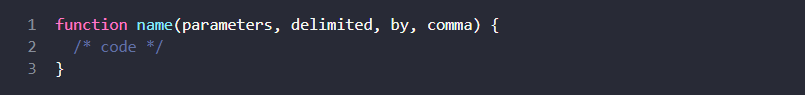

The Modern JavaScript Tutorial:
Summarized
An Introduction
An introduction to JavaScript
- JavaScript was initially created as a browser-only language, but it is now used in lots of other environments as well.
- Today, JavaScript has a unique position as the most widely-adopted browser language, fully integrated with HTML/CSS.
- There are many languages that get “transpiled” to JavaScript and provide certain features. It is recommended to take a look at them, at least briefly, after mastering JavaScript.
Manuals and specifications
- ECMAScript Specifications: Define JavaScript's syntax, behavior, and core features.
- MDN Web Docs: Comprehensive documentation on J.S. features, APIs, and browser compatibility.
- Browser-Specific Documentation: Details on JavaScript implementations in different browsers.
- Compatibility Tables: Compare JavaScript features across ECMAScript versions and browsers.
- Learning Resources: Guides and tutorials for developers to learn and apply JavaScript effectively.
Overall: JavaScript manuals and specifications provide standards for language syntax, behavior, and features, including ECMAScript specs, MDN Web Docs, browser-specific details, compatibility tables, and learning resources.
FullCode Editors
- Code editors in JavaScript are software tools for writing and editing code. They offer features like syntax highlighting, autocomplete, and debugging tools to help developers write code efficiently.
- Popular examples include Visual Studio Code, Sublime Text, Atom, and WebStorm, each catering to different needs and preferences in software development.
Developer console
- The developer console is a browser's built-in JavaScript console that allows developers to test, debug, and inspect code in real-time. It provides features like autocomplete, error messages, and stack trace navigation.
- It is useful for developers to log messages, test code, and troubleshoot issues in their browser-based applications.
- Developer tools allow us to see errors, run commands, examine variables, and much more.
- The developer console is essential for learning JavaScript, debugging, and testing code.
- They can be opened with F12 for most browsers on Windows. Chrome for Mac needs Cmd+Opt+J, Safari: Cmd+Opt+C (need to enable first).
Javascript Fundamentals
Hello, world!
-
We can use a
<script>tag to add JavaScript code to a page. -
The
typeandlanguageattributes are not required. -
A script in an external file can be inserted with
<script src="path/to/script.js"></script>.
There is much more to learn about browser scripts and their interaction with the webpage. But let’s keep in mind that this part of the tutorial is devoted to the JavaScript language, so we shouldn’t distract ourselves with browser-specific implementations of it. We’ll be using the browser as a way to run JavaScript, which is very convenient for online reading, but only one of many.
FullCode Structure
- Statements are instructions executed by the browser. They are usually written on a single line but can span multiple lines.
- Semicolons separate statements. While JavaScript can automatically insert them, it's best to use them explicitly to avoid issues.
-
Comments explain the code and are ignored by the engine. Use
// ...for single-line comments and
/* ... */for multi-line comments. -
Blocks group statements using curly braces
{}. You'll commonly see these in functions, loops, and conditionals. - Whitespace, such as spaces, tabs, and newlines, is mostly ignored, allowing for flexible formatting.
The modern mode, "use strict"
-
'use strict';enables a strict mode to catch common coding errors and unsafe actions. - By default, code executed in the browser console is not in strict mode.
- It is recommended to use strict mode in all scripts to help catch coding mistakes early and ensure safer, cleaner code.
Variables
We can declare variables to store data by using the
var,let, or const keywords.
let– is a modern variable declaration.-
var– is an old-school variable declaration. Normally we don’t use it at all, but we’ll cover subtle differences fromletin the chapter The old "var", just in case you need them. -
const– is likelet, but the value of the variable can’t be changed.
Variables should be named in a way that allows us to easily understand what’s inside them.
FullData Types
There are 8 basic data types in JavaScript.
Seven primitive data types:
-
numberfor numbers of any kind: integer or floating-point, integers are limited by±(253-1). -
bigintfor integer numbers of arbitrary length. -
stringfor strings. A string may have zero or more characters, there’s no separate single-character type. -
booleanfortrue/false. -
nullfor unknown values – a standalone type that has a single valuenull. -
undefinedfor unassigned values – a standalone type that has a single valueundefined. symbolfor unique identifiers.
And one non-primitive data type:
objectfor more complex data structures.
The typeof operator allows us to see which type is
stored in a variable.
-
Usually used as
typeof x, buttypeof(x)is also possible. -
Returns a string with the name of the type, like
"string". -
For
nullreturns"object"– this is an error in the language, it’s not actually an object.
Interaction: alert, prompt, confirm
We covered 3 browser-specific functions to interact with visitors:
alert- shows a message.
prompt-
shows a message asking the user to input text. It returns the
text or, if Cancel button or Esc is clicked,
null. confirm-
shows a message and waits for the user to press “OK” or
“Cancel”. It returns
truefor OK andfalsefor Cancel/Esc.
All these methods are modal: they pause script execution and don’t allow the visitor to interact with the rest of the page until the window has been dismissed.
There are two limitations shared by all the methods above:
- The exact location of the modal window is determined by the browser. Usually, it’s in the center.
- The exact look of the window also depends on the browser. We can’t modify it.
That is the price for simplicity. There are other ways to show nicer windows and richer interaction with the visitor, but if “bells and whistles” do not matter much, these methods work just fine.
FullType Conversions
The three most widely used type conversions are to string, to number, and to boolean.
String Conversion – Occurs when we
output something. Can be performed with
String(value). The conversion to string is usually
obvious for primitive values.
Numeric Conversion – Occurs in math
operations. Can be performed with Number(value).
The conversion follows the rules:
| Value | Becomes… |
|---|---|
undefined |
NaN |
null |
0 |
true / false |
1 / 0 |
string |
The string is read “as is”, whitespaces (includes spaces,
tabs \t, newlines \n etc.) from
both sides are ignored. An empty string becomes
0. An error gives NaN.
|
Boolean Conversion – Occurs in
logical operations. Can be performed with
Boolean(value).
Follows the rules:
| Value | Becomes… |
|---|---|
0, null, undefined,
NaN, ""
|
false |
| any other value | true |
Most of these rules are easy to understand and memorize. The notable exceptions where people usually make mistakes are:
-
undefinedisNaNas a number, not0. -
"0"and space-only strings like" "are true as a boolean.
Comparisons
- Comparison operators return a boolean value.
- Strings are compared letter-by-letter in the “dictionary” order.
- When values of different types are compared, they get converted to numbers (with the exclusion of a strict equality check).
-
The values
nullandundefinedequal==each other and do not equal any other value. -
Be careful when using comparisons like
>or<with variables that can occasionally benull/undefined. Checking fornull/undefinedseparately is a good idea.
Nullish coalescing operator '??'
-
The nullish coalescing operator
??provides a short way to choose the first “defined” value from a list.
It’s used to assign default values to variables:
-
The operator
??has a very low precedence, only a bit higher than?and=, so consider adding parentheses when using it in an expression. -
It’s forbidden to use it with
||or&&without explicit parentheses.
Loops: while and for
We covered 3 types of loops:
-
while– The condition is checked before each iteration. -
do..while– The condition is checked after each iteration. -
for (;;)– The condition is checked before each iteration, additional settings available.
To make an “infinite” loop, usually the
while(true) construct is used. Such a loop, just like
any other, can be stopped with the break directive.
If we don’t want to do anything in the current iteration and would
like to forward to the next one, we can use the
continue directive.
break/continue support labels before the loop. A
label is the only way for break/continue to escape a
nested loop to go to an outer one.
Functions
A function declaration looks like this:
- Values passed to a function as parameters are copied to its local variables.
- A function may access outer variables. But it works only from inside out. The code outside of the function doesn’t see its local variables.
-
A function can return a value. If it doesn’t, then its result is
undefined.
It is always easier to understand a function which gets parameters, works with them and returns a result than a function which gets no parameters, but modifies outer variables as a side effect.
Function naming:
- A name should clearly describe what the function does. When we see a function call in the code, a good name instantly gives us an understanding what it does and returns.
- A function is an action, so function names are usually verbal.
-
There exist many well-known function prefixes like
create…,show…,get…,check…and so on. Use them to hint what a function does.
Functions are the main building blocks of scripts. Now we’ve covered the basics, so we actually can start creating and using them. But that’s only the beginning of the path. We are going to return to them many times, going more deeply into their advanced features.
FullFunction Expression
- Functions are values. They can be assigned, copied or declared in any place of the code.
- If the function is declared as a separate statement in the main code flow, that’s called a “Function Declaration”.
- If the function is created as a part of an expression, it’s called a “Function Expression”.
- Function Declarations are processed before the code block is executed. They are visible everywhere in the block.
- Function Expressions are created when the execution flow reaches them.
In most cases when we need to declare a function, a Function Declaration is preferable, because it is visible prior to the declaration itself. That gives us more flexibility in code organization, and is usually more readable.
So we should use a Function Expression only when a Function Declaration is not fit for the task. We’ve seen a couple of examples of that in this chapter, and will see more in the future.
FullArrow functions, the basics
Arrow functions are handy for simple actions, especially for one-liners. They come in two flavors:
-
Without curly braces:
(...args) => expression– the right side is an expression: the function evaluates it and returns the result. Parentheses can be omitted, if there’s only a single argument, e.g.n => n*2. -
With curly braces:
(...args) => { body }– brackets allow us to write multiple statements inside the function, but we need an explicitreturnto return something.
Code Quality
Debugging in the browser
As we can see, there are three main ways to pause a script:
- A breakpoint.
- The
debuggerstatements. - An error (if dev tools are open and the button is “on”).
When paused, we can debug: examine variables and trace the code to see where the execution goes wrong.
There are many more options in developer tools than covered here. The full manual is at https://developers.google.com/web/tools/chrome-devtools.
The information from this chapter is enough to begin debugging, but later, especially if you do a lot of browser stuff, please go there and look through more advanced capabilities of developer tools.
Oh, and also you can click at various places of dev tools and just see what’s showing up. That’s probably the fastest route to learn dev tools. Don’t forget about the right click and context menus!
FullCoding Style
All syntax rules described in this chapter (and in the style guides referenced) aim to increase the readability of your code. All of them are debatable.
When we think about writing “better” code, the questions we should ask ourselves are: “What makes the code more readable and easier to understand?” and “What can help us avoid errors?” These are the main things to keep in mind when choosing and debating code styles.
Reading popular style guides will allow you to keep up to date with the latest ideas about code style trends and best practices.
FullComments
An important sign of a good developer is comments: their presence and even their absence.
Good comments allow us to maintain the code well, come back to it after a delay and use it more effectively.
Comment this:
- Overall architecture, high-level view.
- Function usage.
- Important solutions, especially when not immediately obvious.
Avoid comments:
- That tell “how code works” and “what it does”.
- Put them in only if it’s impossible to make the code so simple and self-descriptive that it doesn’t require them.
Comments are also used for auto-documenting tools like JSDoc3: they read them and generate HTML-docs (or docs in another format).
FullAutomated testing with Mocha
In BDD, the spec goes first, followed by implementation. At the end we have both the spec and the code.
The spec can be used in three ways:
- As Tests – they guarantee that the code works correctly.
-
As Docs – the titles of
describeandittell what the function does. - As Examples – the tests are actually working examples showing how a function can be used.
With the spec, we can safely improve, change, even rewrite the function from scratch and make sure it still works right.
That’s especially important in large projects when a function is used in many places. When we change such a function, there’s just no way to manually check if every place that uses it still works right.
Without tests, people have two ways:
- To perform the change, no matter what. And then our users meet bugs, as we probably fail to check something manually.
- Or, if the punishment for errors is harsh, as there are no tests, people become afraid to modify such functions, and then the code becomes outdated, no one wants to get into it. Not good for development.
Automatic testing helps to avoid these problems!
If the project is covered with tests, there’s just no such problem. After any changes, we can run tests and see a lot of checks made in a matter of seconds.
Besides, a well-tested code has better architecture.
Naturally, that’s because auto-tested code is easier to modify and improve. But there’s also another reason.
To write tests, the code should be organized in such a way that every function has a clearly described task, well-defined input and output. That means a good architecture from the beginning.
In real life that’s sometimes not that easy. Sometimes it’s difficult to write a spec before the actual code, because it’s not yet clear how it should behave. But in general writing tests makes development faster and more stable.
Later in the tutorial you will meet many tasks with tests baked-in. So you’ll see more practical examples.
Writing tests requires good JavaScript knowledge. But we’re just starting to learn it. So, to settle down everything, as of now you’re not required to write tests, but you should already be able to read them even if they are a little bit more complex than in this chapter.
FullPolyfills and transpilers
In this chapter we’d like to motivate you to study modern and even “bleeding-edge” language features, even if they aren’t yet well-supported by JavaScript engines.
Just don’t forget to use a transpiler (if using modern syntax or operators) and polyfills (to add functions that may be missing). They’ll ensure that the code works.
For example, later when you’re familiar with JavaScript, you can setup a code build system based on webpack with the babel-loader plugin.
Good resources that show the current state of support for various features:
- https://compat-table.github.io/compat-table/es6/ – for pure JavaScript.
- https://caniuse.com/ – for browser-related functions.
P.S. Google Chrome is usually the most up-to-date with language features, try it if a tutorial demo fails. Most tutorial demos work with any modern browser though.
FullObjects: the basics
Objects
Objects are associative arrays with several special features.
They store properties (key-value pairs), where:
- Property keys must be strings or symbols (usually strings).
- Values can be of any type.
To access a property, we can use:
- The dot notation:
obj.property. -
Square brackets notation
obj["property"]. Square brackets allow taking the key from a variable, likeobj[varWithKey].
Additional operators:
- To delete a property:
delete obj.prop. -
To check if a property with the given key exists:
"key" in obj. -
To iterate over an object:
for (let key in obj)loop.
What we’ve studied in this chapter is called a “plain object”,
or just Object.
There are many other kinds of objects in JavaScript:
Arrayto store ordered data collections,-
Dateto store the information about the date and time, -
Errorto store the information about an error. - …And so on.
They have their special features that we’ll study later. Sometimes people say something like “Array type” or “Date type”, but formally they are not types of their own, but belong to a single “object” data type. And they extend it in various ways.
Objects in JavaScript are very powerful. Here we’ve just scratched the surface of a topic that is really huge. We’ll be closely working with objects and learning more about them in further parts of the tutorial.
FullObject references and copying
Objects are assigned and copied by reference. In other words, a variable stores not the “object value”, but a “reference” (address in memory) for the value. So copying such a variable or passing it as a function argument copies that reference, not the object itself.
All operations via copied references (like adding/removing properties) are performed on the same single object.
To make a “real copy” (a clone) we can use
Object.assign for the so-called “shallow copy”
(nested objects are copied by reference) or a “deep cloning”
function structuredClone or use a custom cloning
implementation, such as
_.cloneDeep(obj).
Garbage collection
The main things to know:
- Garbage collection is performed automatically. We cannot force or prevent it.
- Objects are retained in memory while they are reachable.
- Being referenced is not the same as being reachable (from a root): a pack of interlinked objects can become unreachable as a whole, as we’ve seen in the example above.
Modern engines implement advanced algorithms of garbage collection.
A general book “The Garbage Collection Handbook: The Art of Automatic Memory Management” (R. Jones et al) covers some of them.
If you are familiar with low-level programming, more detailed information about V8’s garbage collector is in the article A tour of V8: Garbage Collection.
The V8 blog also publishes articles about changes in memory management from time to time. Naturally, to learn more about garbage collection, you’d better prepare by learning about V8 internals in general and read the blog of Vyacheslav Egorov who worked as one of the V8 engineers. I’m saying: “V8”, because it is best covered by articles on the internet. For other engines, many approaches are similar, but garbage collection differs in many aspects.
In-depth knowledge of engines is good when you need low-level optimizations. It would be wise to plan that as the next step after you’re familiar with the language.
FullObject methods, "this"
- Functions that are stored in object properties are called “methods”.
-
Methods allow objects to “act” like
object.doSomething(). - Methods can reference the object as
this.
The value of this is defined at run-time.
-
When a function is declared, it may use
this, but thatthishas no value until the function is called. - A function can be copied between objects.
-
When a function is called in the “method” syntax:
object.method(), the value ofthisduring the call isobject.
Please note that arrow functions are special: they have no
this. When this is accessed inside an
arrow function, it is taken from outside.
Constructor, operator "new"
- Constructor functions or, briefly, constructors, are regular functions, but there’s a common agreement to name them with capital letter first.
-
Constructor functions should only be called using
new. Such a call implies a creation of emptythisat the start and returning the populated one at the end.
We can use constructor functions to make multiple similar objects.
JavaScript provides constructor functions for many built-in
language objects: like Date for dates,
Set for sets and others that we plan to study.
Optional chaining '?.'
The optional chaining ?. syntax has three forms:
-
obj?.prop– returnsobj.propifobjexists, otherwiseundefined. -
obj?.[prop]– returnsobj[prop]ifobjexists, otherwiseundefined. -
obj.method?.()– callsobj.method()ifobj.methodexists, otherwise returnsundefined.
As we can see, all of them are straightforward and simple to
use. The ?. checks the left part for
null/undefined and allows the evaluation to proceed
if it’s not so.
A chain of ?. allows to safely access nested
properties.
Still, we should apply ?. carefully, only where
it’s acceptable, according to our code logic, that the left part
doesn’t exist. So that it won’t hide programming errors from us,
if they occur.
Symbol type
Symbol is a primitive type for unique identifiers.
Symbols are created with Symbol() call with an
optional description (name).
Symbols are always different values, even if they have the same
name. If we want same-named symbols to be equal, then we should
use the global registry: Symbol.for(key) returns
(creates if needed) a global symbol with key as the
name. Multiple calls of Symbol.for with the same
key return exactly the same symbol.
Symbols have two main use cases:
-
“Hidden” object properties.
If we want to add a property into an object that “belongs” to another script or a library, we can create a symbol and use it as a property key. A symbolic property does not appear in
for..in, so it won’t be accidentally processed together with other properties. Also it won’t be accessed directly, because another script does not have our symbol. So the property will be protected from accidental use or overwrite.So we can “covertly” hide something into objects that we need, but others should not see, using symbolic properties.
-
There are many system symbols used by JavaScript which are accessible as
Symbol.*. We can use them to alter some built-in behaviors. For instance, later in the tutorial we’ll useSymbol.iteratorfor iterables,Symbol.toPrimitiveto setup object-to-primitive conversion and so on.
Technically, symbols are not 100% hidden. There is a built-in method Object.getOwnPropertySymbols(obj) that allows us to get all symbols. Also there is a method named Reflect.ownKeys(obj) that returns all keys of an object including symbolic ones. But most libraries, built-in functions and syntax constructs don’t use these methods.
FullObject to primitive conversion
The object-to-primitive conversion is called automatically by many built-in functions and operators that expect a primitive as a value.
There are 3 types (hints) of it:
-
"string"(foralertand other operations that need a string) "number"(for maths)-
"default"(few operators, usually objects implement it the same way as"number")
The specification describes explicitly which operator uses which hint.
The conversion algorithm is:
-
Call
obj[Symbol.toPrimitive](hint)if the method exists, -
Otherwise if hint is
"string"-
try calling
obj.toString()orobj.valueOf(), whatever exists.
-
try calling
-
Otherwise if hint is
"number"or"default"-
try calling
obj.valueOf()orobj.toString(), whatever exists.
-
try calling
All these methods must return a primitive to work (if defined).
In practice, it’s often enough to implement only
obj.toString() as a “catch-all” method for string
conversions that should return a “human-readable” representation
of an object, for logging or debugging purposes.